To make time keeping quick and easy, and possibly in a drunken stupor, members of DevFu [ devfu.com ] wandered in to a Lego store and put together the Lego Scrum Timecard. I learned this from them.
The idea is to build your timecard with short lego pieces in 15 and 25 minute increments, one board per day, and then at the end of your week add up your hours.
Each color on the board can represent a project, or they can represent the traditional black (or clear in this case) box, red box, green box scenario. It's up to you and your process to decide this. Feel free to use as many colors and sizes as you want, as long as they fit your way of thinking.
Hell! Go three dimensional if you want!
Black board down.
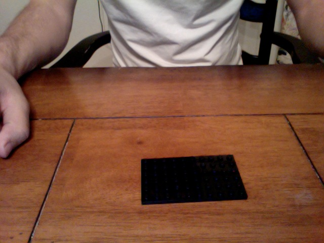Green to the center to build off of.
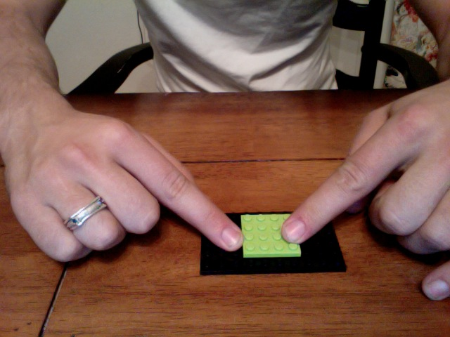Green on the right and right.
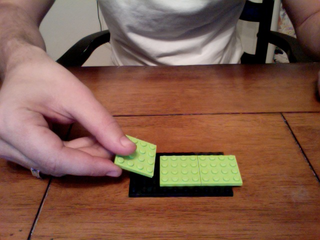Done. Moving on.
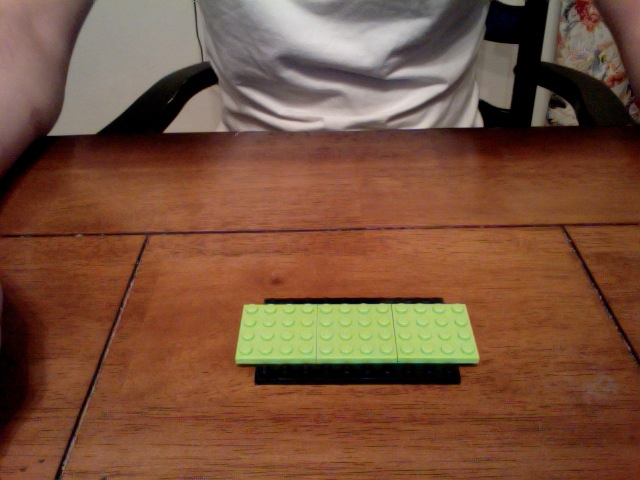You should have at least 12 pieces to represent 6 hours; or 16 for a straight 8 hours. Here I'm displaying 12 red and green pieces, and 28 clear just in case.
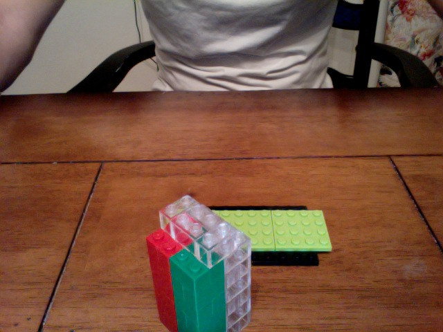This represents 4.5 hours used on 3 projects.
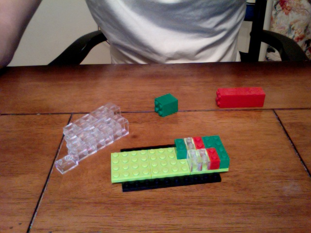Lunch time over.
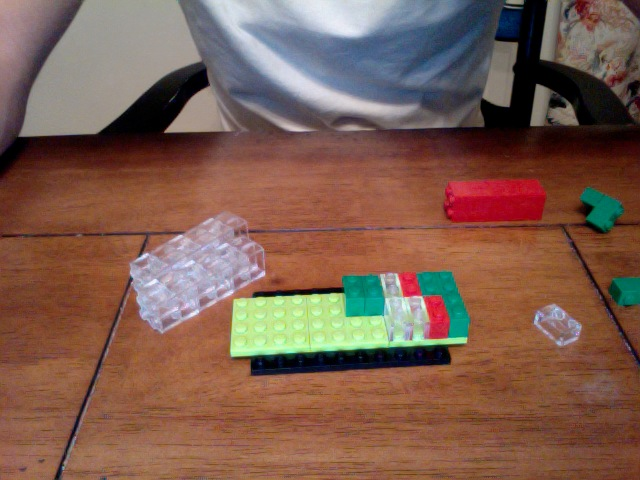Here's one where I only worked 15 minutes.
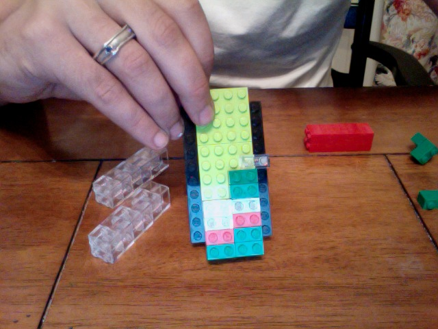15 minute carry overs.
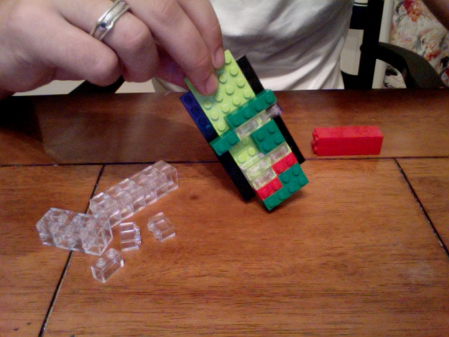Here's my lunch break, an hour long, clearly visible.
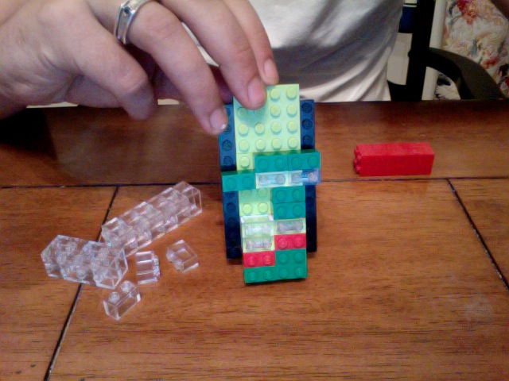All done and adjusted for breaks during the day.
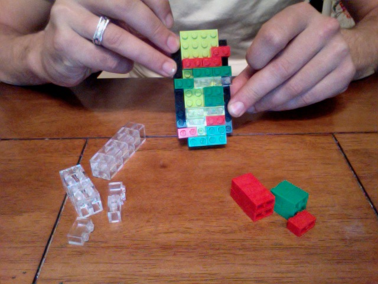Drop it in your favorite mug.
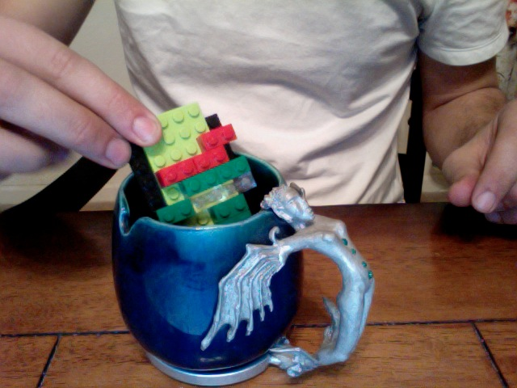Or combine it with other lego in the background
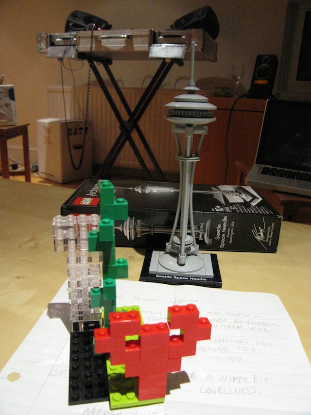